سلاسل تعليمية للاستقصاء والتعلم العملي.
سلسلتان مترابطتان تراعيان احتياجات المدارس الدولية والسياق السعودي والخليجي. استكشف الصفوف وحالة التطوير دون افتراض اكتمال الاعتمادات.
Global Pathways
برنامج مترابط في الدراسات الاجتماعية للمرحلتين الابتدائية والثانوية، ينمّي الاستقصاء والوعي الجغرافي والفهم التاريخي والتفكير الاقتصادي، مع مراعاة السياق السعودي والخليجي. تختلف حالة الإنتاج والاعتماد بحسب الصف.
قيد التطوير · بانتظار الاعتمادات السعودية حيثما تنطبقالأغلفة للمعاينة فقط؛ ولا تتوفر الكتب الكاملة للتنزيل.
تصفح أغلفة الصفوف (12)اختر الصف لعرض غلافه
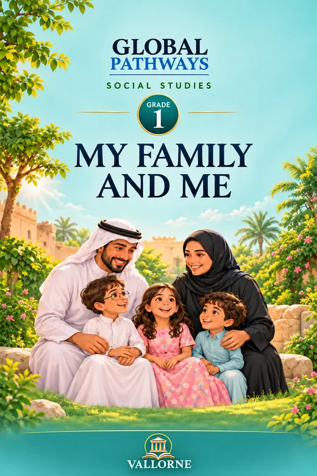
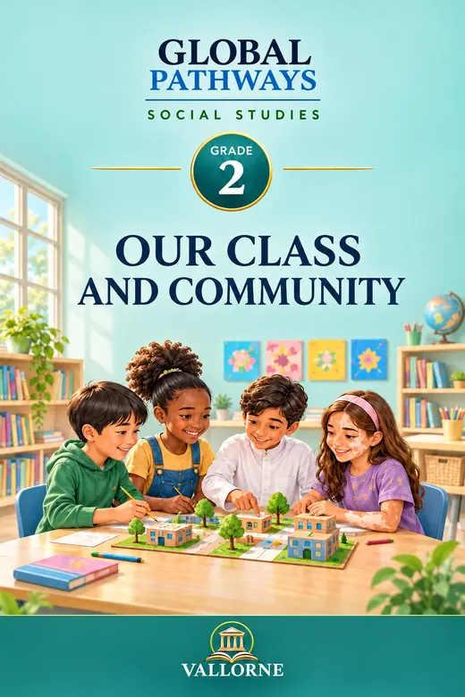
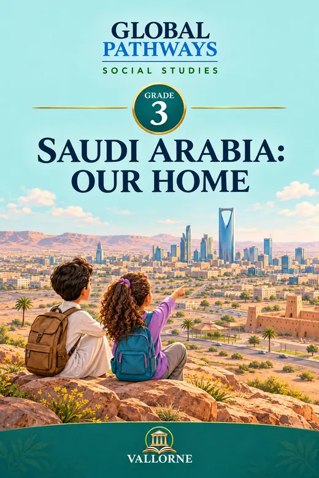
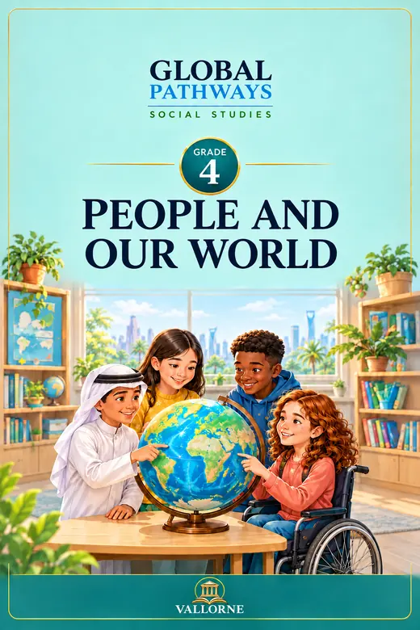
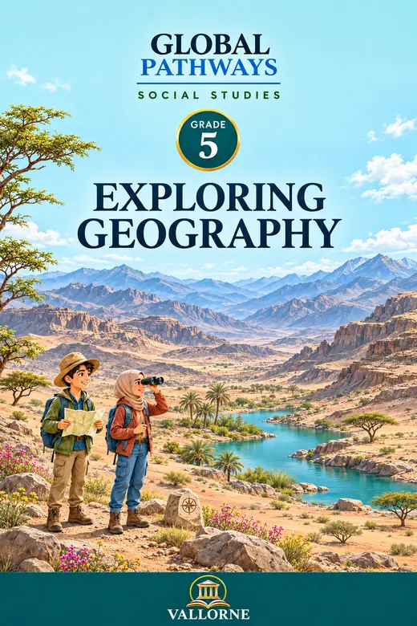
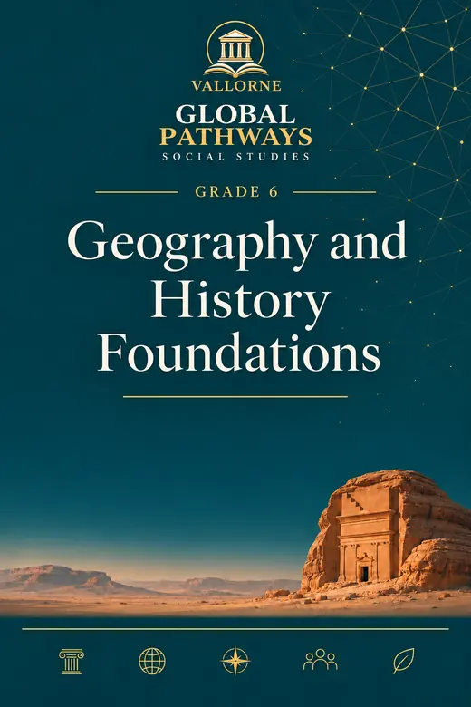
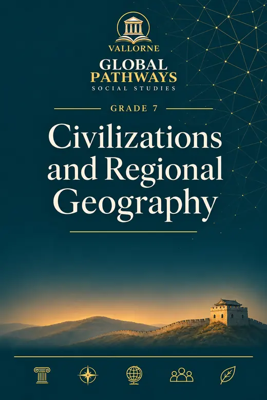
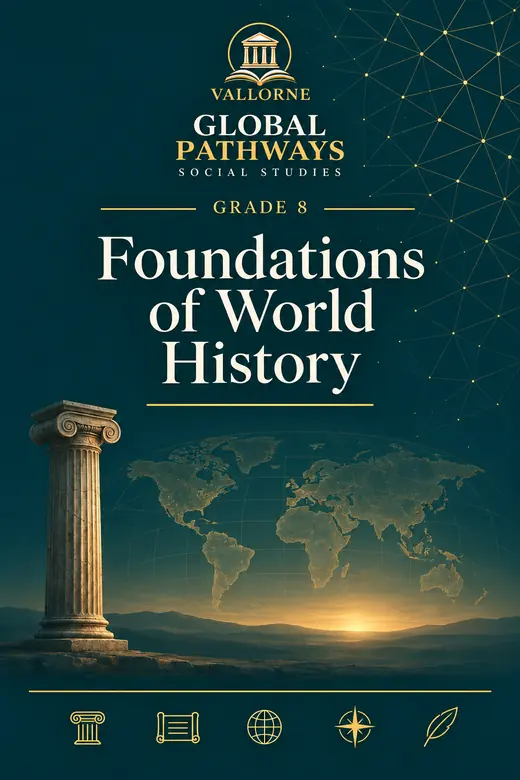
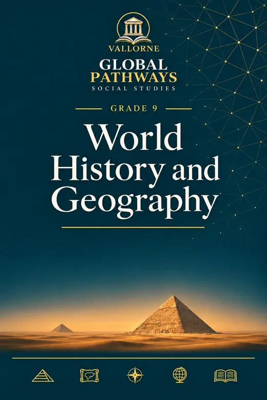
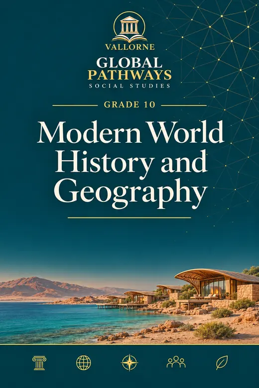
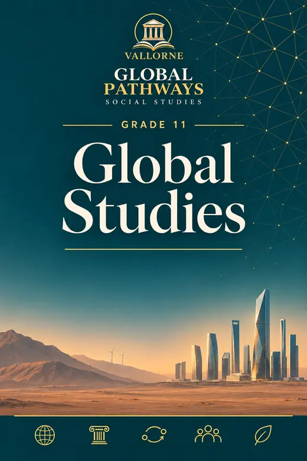
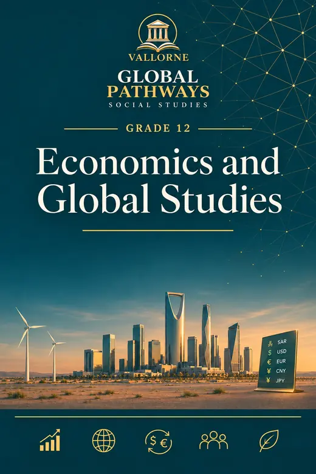
تتوفر عينة ممثلة للصف الحادي عشر، تشمل افتتاحية الوحدة الأولى والدرس 1.1 كاملاً في 12 صفحة. وستُضاف عينات الصفوف الأخرى بعد اعتمادها.
اطلب عرضاً تقديمياً للكتب المدرسيةMoney Lab
برنامج متدرج للثقافة المالية يطوّر اتخاذ القرارات المالية والميزانية والادخار والاختيارات المسؤولة والتفكير المالي الملائم للعمر. السلسلة مخططة بكامل صفوفها، وتختلف جاهزيتها من صف إلى آخر.
قيد التطوير · بانتظار الاعتمادات السعودية حيثما تنطبقالأغلفة للمعاينة فقط؛ ولا تتوفر الكتب الكاملة للتنزيل.
تصفح أغلفة الصفوف (9)اختر الصف لعرض غلافه
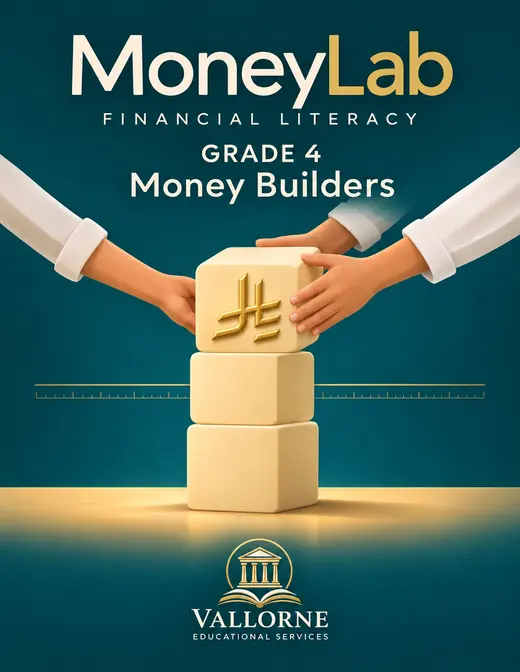
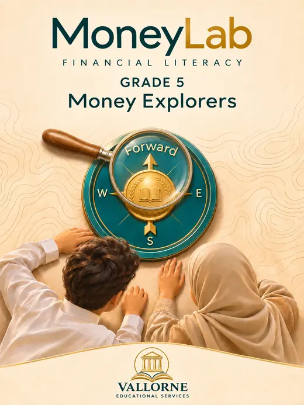
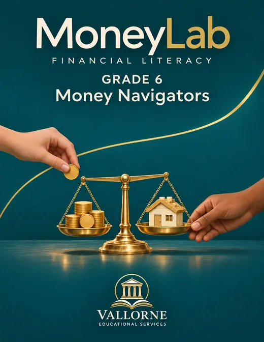
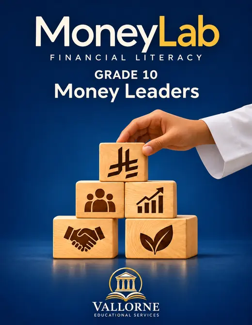
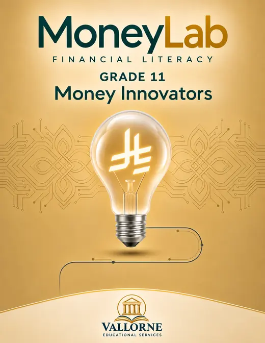
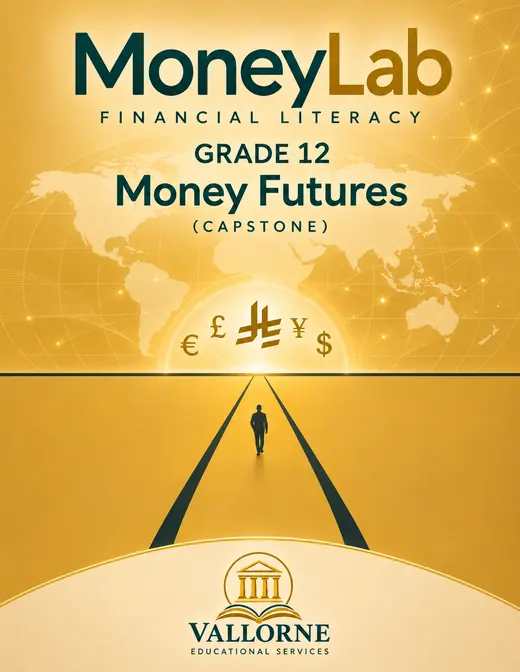
ستضاف ملفات PDF لعينات تمثيلية بعد اعتمادها للنشر. لا تتوفر الكتب الكاملة أو إجابات المعلمين أو بنوك أسئلة المنصة للتنزيل العام.
اطلب عرضاً تقديمياً للكتب المدرسية